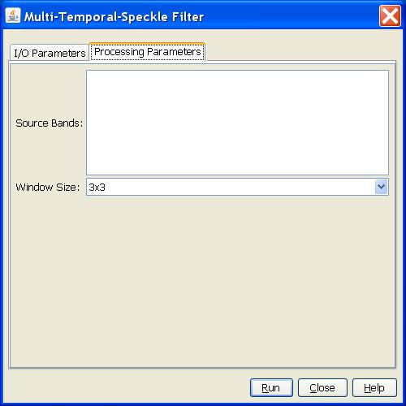

Multi-Temporal Speckle Filter Operator
SAR images have inherent salt and pepper like texturing called speckles which
degrade the quality of the image and make interpretation of features more
difficult. The speckles are caused by random constructive and destructive interference
of the de-phased but coherent return waves scattered by the elementary scatters
within each resolution cell. Multi-temporal filtering is one of the commonly used
speckle noise reduction techniques.
Multi-Temporal Speckle Filtering
For a sequence of N registered multitemporal images, with intensity at position
(x, y) in the kth image denoted by Ik(x, y), the temporal filtered images are
given by:
for k = 1, ..., N, where E[I] is the local mean value of pixels in a window centered at (x, y) in image I.
Pre-Processing Steps
The operator has the following two pre-processing steps:
- The first step is calibration in which σ0
is derived from the digital number at each pixel. This ensures that
values of from different times and in different parts of the image are
comparable.
- The second step is registration of the multitemporal images.
Here it is assumed that pre-processing has been performed before applying
this operator. The input to the operator is assumed to be a product
with multiple calibrated and co-registrated bands.
Parameters Used
The following parameters are used by the operator:
- Source Band: All bands (real or virtual) of the source product. User can
select one or more bands for producing the filtered image. If no bands are
selected, then by default all bands will be selected.
- Window
Size: Dimension of the sliding window that is used in computing spatial
average in each image of the temporal sequence. The supported window sizes are
3x3, 5x5, 7x7, 9x9 and 11x11.

Reference: S. Quegan, T. L. Toan, J. J. Yu, F. Ribbes and N. Floury, “Multitemporal
ERS SAR Analysis Applied to Forest Mapping”, IEEE Transactions on
Geoscience and Remote Sensing, vol. 38, no. 2, March 2000.